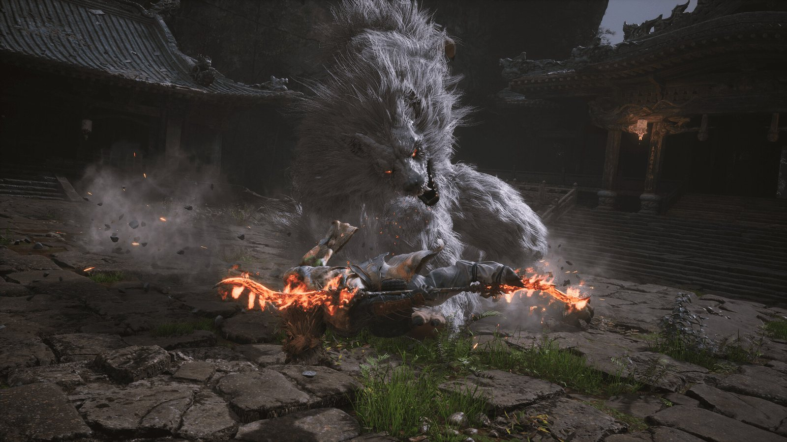
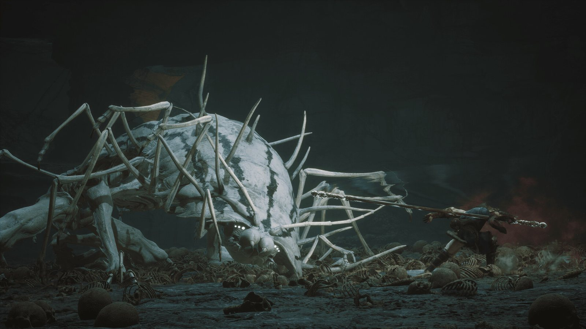
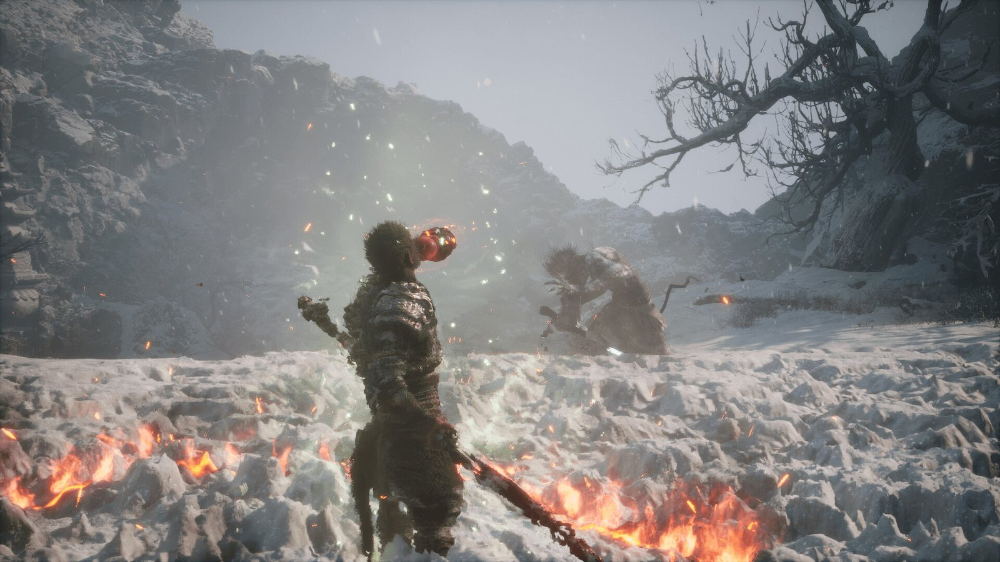

影神图
游戏里有一本册子，替每一只妖立传：它从哪来，叫什么别号，做过什么，最后输在哪里。这里收十三则，可按下类筛选，也可直接搜名字。
Bestiary · 影神图
妖有人相，
人有妖心
点开任意一张卡片，可以读到完整的小传与打法提示。文字为二次整理，不是游戏原文。
13 ENTRIES / 3 GROUPS
无没有找到这一条。换个名字，或把分类切回「全部」。
影神图为二次整理：小传依据游戏内设定与《西游记》原文重新叙述，挑战提示来自个人体验，均非官方文本。
— OFFICIAL STILLS · 剧照
妖的真身
官方游戏截图：狼妖、蛛妖与雪原一战。画面版权归游戏科学（Game Science）所有。


